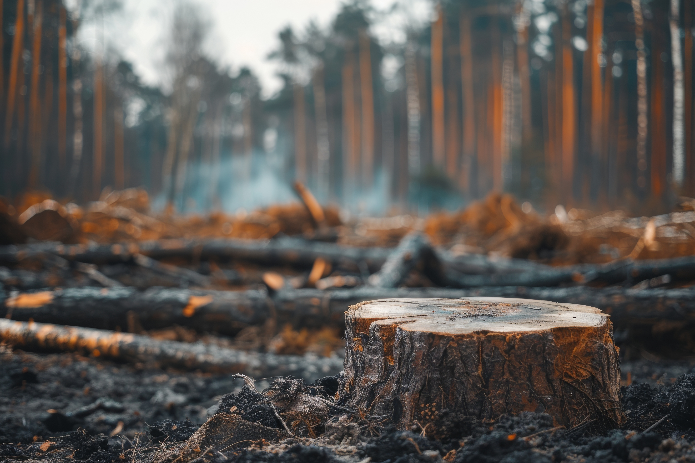

Wildlife Conservation Efforts
Wildlife conservation is crucial for maintaining biodiversity and ensuring the survival of endangered species. This page highlights key initiatives and strategies aimed at protecting wildlife around the globe.
Why is Wildlife Conservation Important?
Wildlife conservation helps to protect the natural habitats of various species, ensuring ecological balance. It also supports the livelihoods of communities that depend on these ecosystems for their survival.
Key Conservation Initiatives

Protected Areas & National Parks
"Governments and conservation organizations establish protected areas, such as national parks and wildlife reserves, to safeguard habitats and biodiversity. These areas provide a safe haven for endangered species, regulate human activities, and support ecological balance. Examples include Yellowstone National Park in the U.S. and the Serengeti National Park in Africa."
Anti-Poaching Efforts & Wildlife Law Enforcement
"Illegal wildlife trade and poaching threaten many species, including elephants, rhinos, and tigers. Conservation groups and governments implement strict anti-poaching laws, deploy ranger patrols, and use advanced technology like drones and AI-powered surveillance to track and prevent illegal activities. Organizations such as the WWF and WildAid play a crucial role in this fight."

Habitat Restoration & Reforestation
"Deforestation, pollution, and climate change have led to habitat destruction, pushing species toward extinction. Reforestation projects, wetland restoration, and coral reef rehabilitation help restore ecosystems and improve biodiversity. Initiatives like the Trillion Trees Campaign and mangrove restoration projects aim to rebuild these critical environments."
Community-Based Conservation & Ecotourism
"Engaging local communities in conservation efforts ensures long-term sustainability. Programs that promote responsible ecotourism, sustainable farming, and wildlife-friendly livelihoods help balance economic development with nature preservation. Examples include community-led wildlife conservancies in Kenya and indigenous land stewardship programs in the Amazon rainforest."

How You Can Help
You can contribute to wildlife conservation by supporting local and global initiatives, volunteering your time, or simply spreading awareness about the importance of protecting our planet's biodiversity.
Get Involved